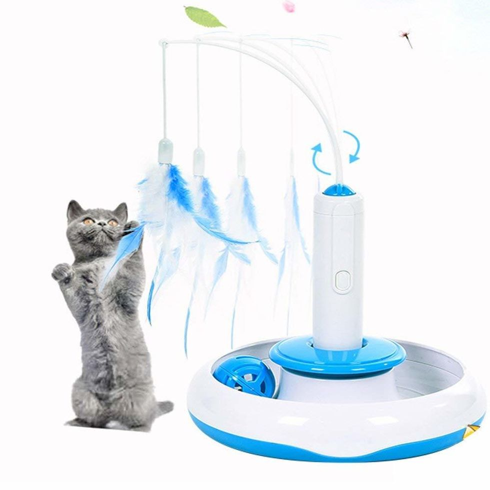

First day of class!I learnt about so many interesting idea from other participants. My idea at this point is to build a device for my cat that combines a feeding mechanism and a few different toys. Because he is only allowed to stay in half of the house, I want my design to include a remote control that connects to my phone. Safety is another key consideration to my design, because of the littles kids in the house. I'll try to avoid small components as much as possible, or at least create a strong connection to the main body.
As for details, I imagine the final product to be multi-functional and compacted in size. The feeding system can be controled from a program installed on my devices. Different from the ones on the market, I want my design to be more flexible in changing diets and feeding times rather than having a fixed time set. I want to include one or two kinds of toys. One of them would be the bubble sheet music player, and the other one should encourage my cat to do exercisem, maybe a rotating feather.
I found this picture online, which roughly examplifies the model I'm thinking about.
